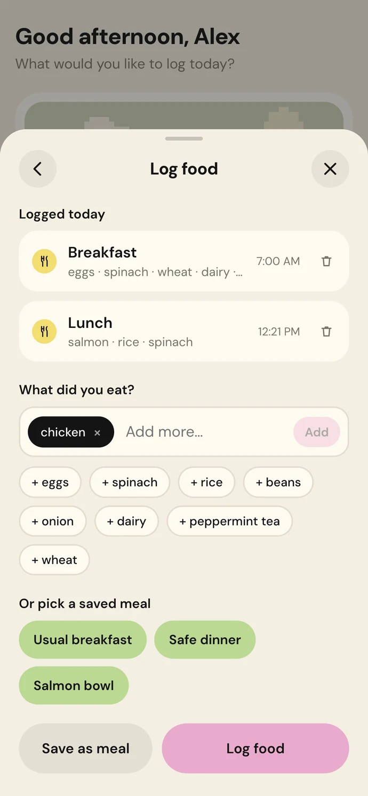
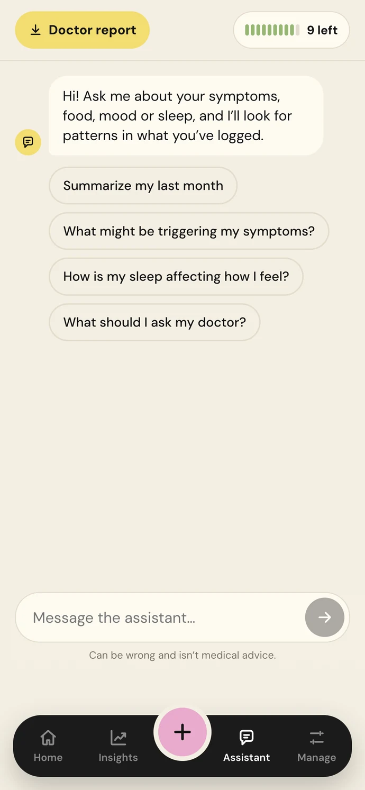
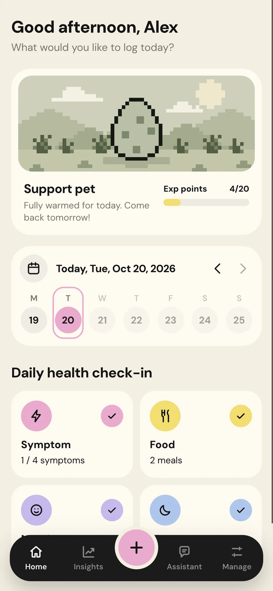

Ideation
Started from a personal problem: making sense of day-to-day symptoms is hard when food, mood, and sleep are tracked nowhere. I used AI to pressure-test the idea, map the audience, and shape the scope of a first release.
I wanted to find out how far one designer could go with AI. So I took Daywell, a symptom and pattern tracker, from first idea to a live beta on my own: product, design, build, and launch.



I've had the idea for Daywell since I was 30. Living with chronic illness meant I was always the one working out what set my symptoms off, and I never had a good way to track it. I kept piecing it together from memory, guessing which meal, bad night of sleep, or stressful week was to blame.
I wanted a simple tool that would let me log how I felt each day and show me my own triggers over time, instead of leaving me to figure it out alone. For years it stayed an idea. With AI, I finally had a way to build it myself, from the first sketch to a product people can use.
Started from a personal problem: making sense of day-to-day symptoms is hard when food, mood, and sleep are tracked nowhere. I used AI to pressure-test the idea, map the audience, and shape the scope of a first release.
Defined the flows, visual language, and tone myself, aiming for something calm and approachable rather than clinical. AI helped me explore options quickly; every decision was mine.
Built the product with AI coding assistants, working in small, testable steps and reviewing everything that shipped. The result is a working app on iPhone and the web.
Shipped a marketing site with pricing and FAQs, opened a free beta, and set up the pieces needed to take Daywell from a prototype to something real people can use.
AI pair-programmer for building, refactoring, and debugging the app and site.
Brainstorming, research, copy, and structuring product decisions.
Visual direction, screens, and prototypes before and during build.
Shipped as a website and an iPhone beta.
AI shortened the distance between an idea and a working product, but it did not replace judgment. Knowing what to build, what to cut, and when something felt wrong still came from design. A fuller write-up of the process is on the way; in the meantime, the product is live.